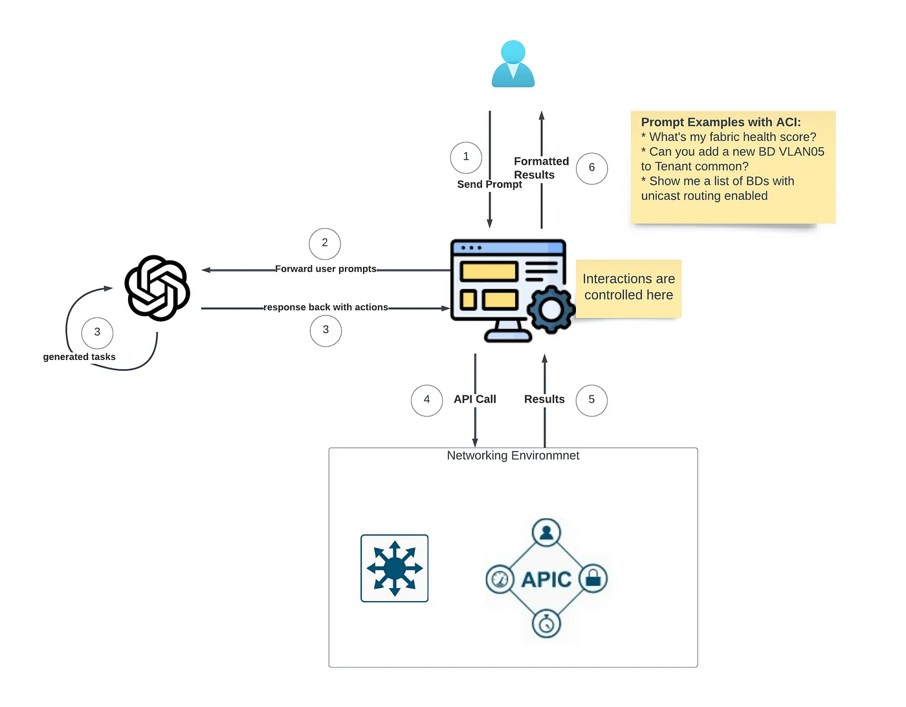

A series to explore how to leverage LLM for networking tasks
The rise of chatGPT and large language models (LLM) has opened up the possibility of transforming various domains. However, networking remains largely unexplored.
In this series, we’ll explore the potential of LLMs to empower Networking Operations. No AI/ML knowledge is required.
For the Busy People - TL;DR For the Series
- LLM demonstrated significant promise in assisting with IT and networking configuration management and troubleshooting tasks.
- Human engineers are irreplaceable in the AI-driven landscape, as their technical expertise is essential for accurately conveying intentions to and guiding ChatGPT.
- A conversational approach to configuration management offers a more intuitive and user-friendly alternative than traditional automation tools.
- The integration of Function Calls and RAG plays a crucial role in minimizing hallucinations and enhancing the accuracy of configurations.
- Developing a robust validation pipeline for models is essential, given the potential for hallucinations and the inherent inconsistencies in LLMs.
- Treating LLMs as software development tools rather than chatbots is crucial. Understanding how to integrate them with external software will enhance the user experience and unlock a broader range of use cases.
- The rise of domain-specific LLMs, such as Large Vision Models, is anticipated to be a significant trend. While not everyone will be involved in their development, their application will become widespread across various fields.
Introduction
In this opening chapter, we’ll outline our mission the topics we intend to cover, and provide a high-level overview. Additionally, we’ll address some frequently asked questions.
Given my background in Cisco ACI, it will be the focus of our demonstrations. We will utilize the ChatGPT model, specifically “GPT-4”, for all demonstrations.
Mission
The primary objective of this exploration is to assess the effectiveness of LLMs in managing networks without generating inaccurate or misleading information (commonly referred to as ‘hallucinations’)
Our approach will begin with basic use cases, gradually increasing in complexity. The application of LLMs will guide all networking configuration changes, with inputs provided in plain English. Instead of relying on graphical user interfaces, our interaction will be purely conversational
Topics To Be Covered
- Explore the fundamentals of instruction formulation, function invocation, context understanding, and prompt crafting in ChatGPT.
- Investigating ChatGPT’s ability to execute function calls for API interactions within an ACI environment.
- Analyzing ChatGPT’s responses to diverse queries and examining ways to refine them.
- Explore RAG (Retrieval Augmented Generation) for real-time knowledge retrieval to assist with network configurations.
In future blogs, we will further look into more advanced LLM topics, such as fine-tuning LLMs and pre-training a model from scratch.
Environment Setup and High-Level Flow
We’ll have an ACI Simulator in the environment to interact with. We’ll create a small agent as the middleware that handles user input, communicates with ChatGPT, and makes API calls to the APIC simulator.

Frequently Asked Questions
Will network engineers become obsolete due to the evolution of LLMs?
No, network engineers will not become obsolete with the advent of LLMs. Our expert-level knowledge will become increasingly vital. The critical shift will be robust communication and expression skills, essential for effectively training, guiding, and educating LLMs using precise language.
Networking is a unique domain populated with proprietary information. This contrasts with the more open nature of general programming languages (Python, C, JS…etc).
Additionally, networking alone encompasses a variety of technologies (such as Firewalls, Routers, and Load Balancers), each with its specific hardware, capabilities, and firmware features. This complexity presents a significant challenge for any LLM to navigate successfully.
Therefore, for LLMs to be truly effective and beneficial in networking, they require substantial knowledge input from human experts. By infusing LLMs with this expertise, they, in turn, can become powerful tools that augment and enhance our capabilities in network management.
How will LLMs impact network engineers ?
LLMs will become a powerful aid to us, similar to their impact in other domains. While the intricacies of network design and intention remain too complex for LLMs to replace, they will significantly streamline tasks like routine network configuration changes. These tasks will become simpler, safer, more transparent, and eventually human language-driven. This advancement will likely enhance today’s Infrastructure as Code (IaC) practices. LLM can also act as an abstraction layer on top of IaC and interface directly with humans.
Additionally, network operations, troubleshooting, information gathering, and real-time action-taking will become more efficient as LLMs are user-friendly and can process complex requests. Over time, the role of the network engineer will gradually evolve from being technically oriented to being more aligned with business objectives, allowing for a greater focus on designing robust, resilient, extensible, and flexible networks.
Design to automate - The more a network adheres to a design pattern, the easier it will be for AI and LLMs to manage and maintain.
Q: How is this different from network automations?
AI/LLM offers several advantages over conventional automation tools like Ansible, Terraform, or Python-based scripts:
-
A human-friendly natural language interface requires no automation skills to perform automated tasks.
-
LLM can access a real-time knowledge base for informed decision-making and provide relevant recommendations as necessary.
-
LLM can also engage in interactive dialogues, offering users insights into the implementation process of a task.
-
LLM can reason and adapt to their environment when errors occur. For instance, they can correct typos in user input, unlike tools like Ansible or Terraform, which would report an error.
-
LLM can analyze network topologies, providing an extra safety net for assessing the impact of a configuration change.
Do network engineers need to pick up AI skills?
Network engineers don’t necessarily need to master AI/ML algorithms, but acquiring skills that leverage AI technology is beneficial. This includes learning LLM prompt engineering, acquiring basic Python knowledge, and understanding APIs. Viewing tools like ChatGPT as development tools rather than a product is crucial. Otherwise, you’ll always be disappointed. This series will demonstrate how I apply ACI/Python knowledge to enhance ChatGPT’s performance.
Most importantly, understanding the nuances of networking is crucial. While LLMs can readily acquire common and generic knowledge, the subtleties that stem from real-world experience are more complex to grasp. This is similar to how we can quickly learn generic networking concepts, but it takes time to grasp how such knowledge applies to specific networking environments.
Some of the answers above might not be obvious, but hopefully, they’ll become clearer at the end of this series.
One Last Thought
As we witness the ongoing evolution of Large Language Models, the boundaries of their capabilities are largely defined by the extent of our imagination. The key lies in our ability to offer precise guidance. The potential of LLMs is vast, but it hinges on our skillful interaction and thoughtful input.
See you in the next article: Networking and LLM in the Age of AI - Pt II: Exploring Basic Interactions